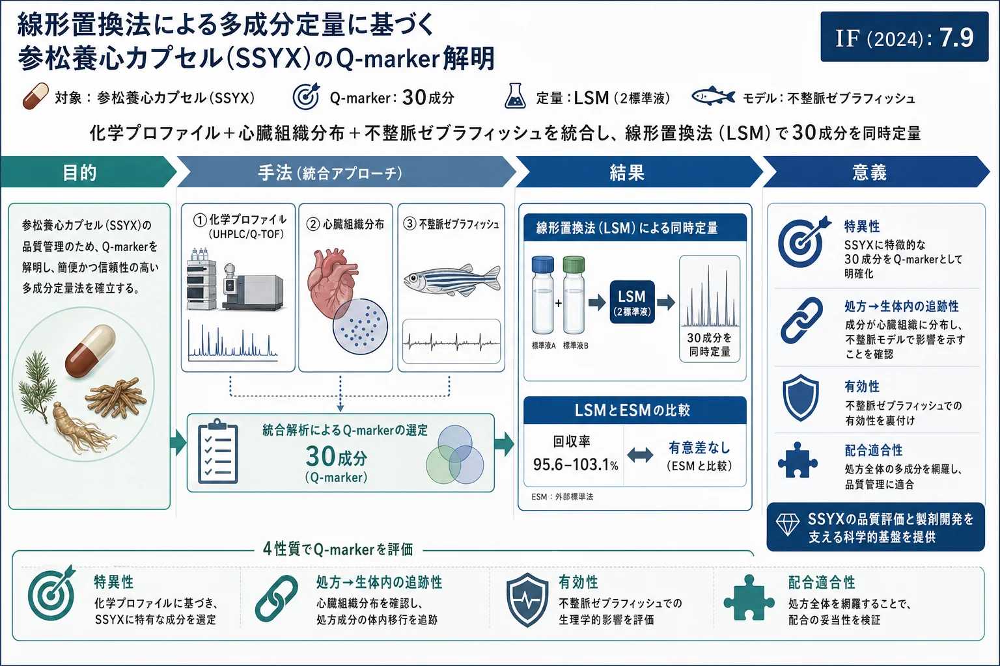
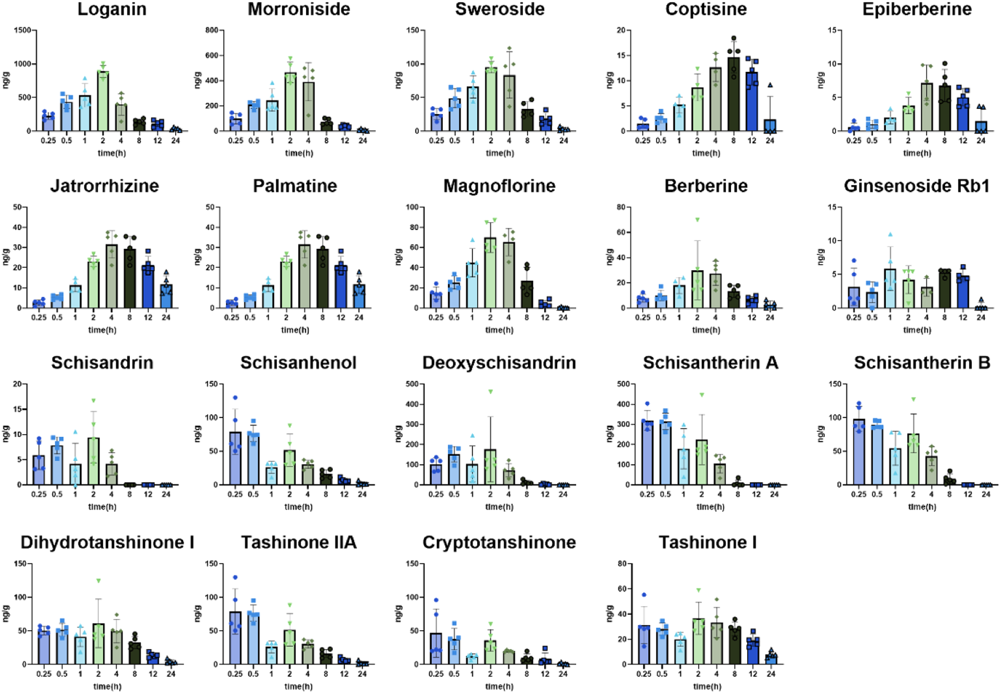
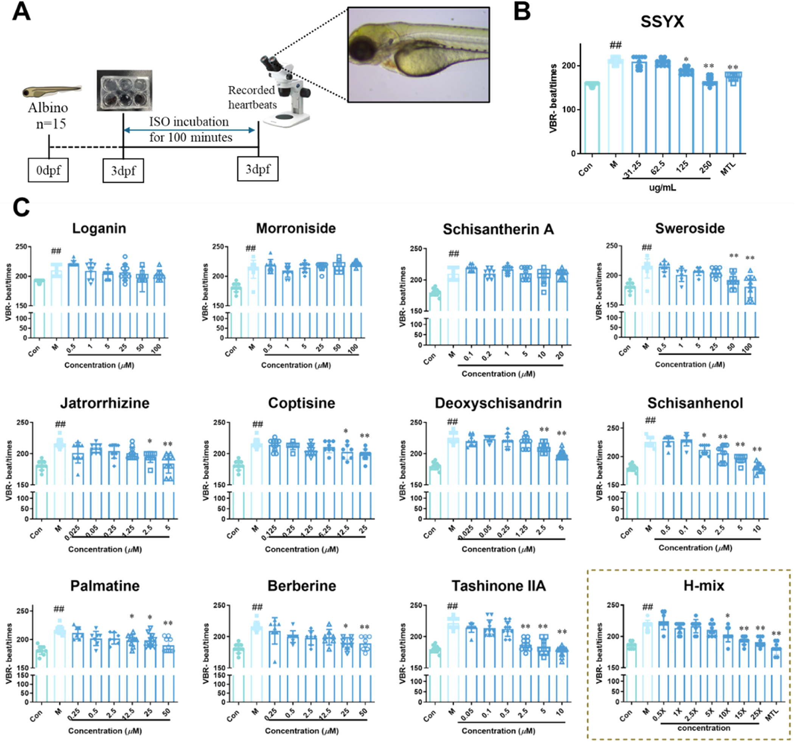
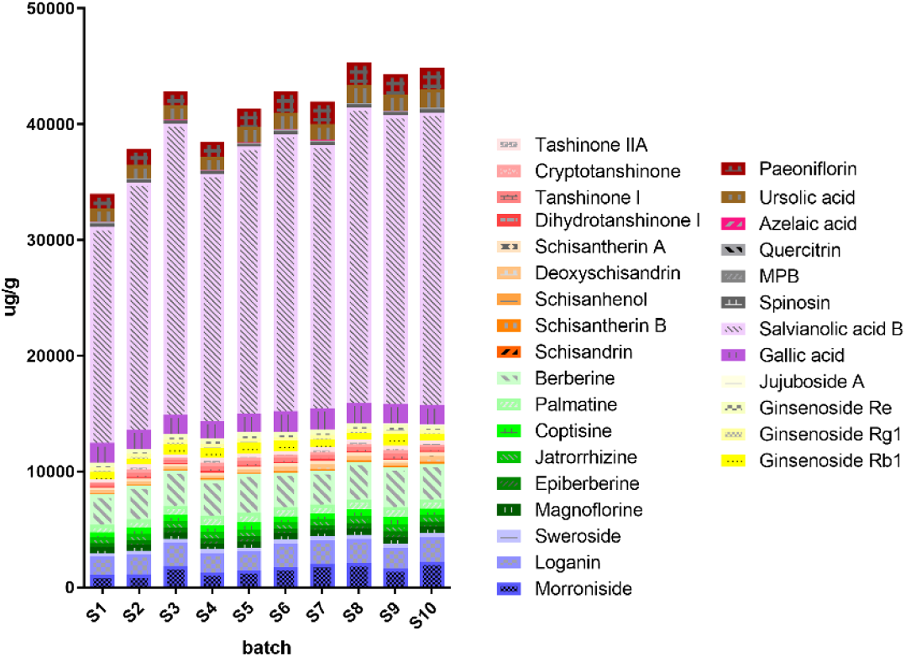
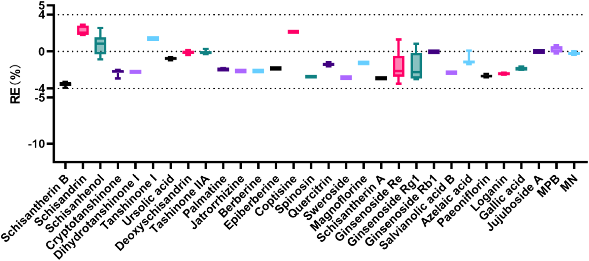
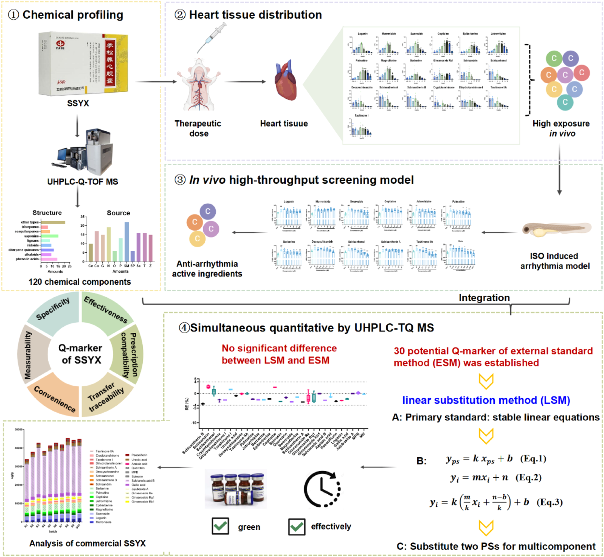

線形置換法による多成分定量に基づく参松養心カプセル(SSYX)のQ-marker解明

<!-- 方針: ほぼ全訳＋必要に応じた補足。原文構成に沿って訳出。「> 補足:」は訳者注。 -->
書誌情報
- 原題: Insights into Q-marker of Shensong Yangxin capsule in treating cardiac arrhythmias based on a linear substitution strategy in quantification of multiple components
- 著者: Zi-ting Li, Peng-cheng Zhao, Xiao-xing Wang, Lv-qi Xie, Yan Li, Shui-xing Zhang, Xi-yang Tang, Yi Dai（曁南大学薬学院 漢方・天然物研究所／曁南大学第一附属医院 ほか, 中国）
- 掲載: Phytomedicine 138 (2025) 156382. https://doi.org/10.1016/j.phymed.2025.156382
- インパクトファクター: 約7.9（Phytomedicine, JCR 2024 / Clarivate。出典により6.7〜8.8と幅があり要確認）
- 受理経過: 2025年オンライン公開（Phytomedicine 138巻）
補足: SSYX = 参松養心カプセル（Shensong Yangxin capsule。心房細動など不整脈に用いられ、国家基本薬物に収載）。LSM = 線形置換法、ESM = 外部標準法、IRS = 内部参照標準、MRM = 多重反応モニタリング。本論文は分析法開発＋in vivo/組織分布＋薬効モデルを統合した研究論文。
要旨（Abstract）
背景: Q-markerは漢方の安全性・有効性確保の重要ツールだが、特に標準品の不足から同定と実用化に課題が残る。
目的: 化学プロファイル・標的組織分布・in vivoハイスループットスクリーニングを多次元統合してSSYXのQ-markerを同定し、多成分定量の 線形置換法(LSM) を提案する。
方法: ①UHPLC/Q-TOF MSでSSYXの化学成分を系統的に特性化。②心臓組織分布研究で経口投与後に生体内高曝露の成分を同定。③ハイスループット不整脈ゼブラフィッシュモデルで鍵成分をさらにスクリーニング。④以上を統合してQ-markerを選定し、UHPLC-TQ-MSで定量法を開発。
結果: 化学プロファイル・心臓組織分布・抗不整脈活性を 特異性・処方から生体内への追跡性・有効性・配合適合性 の4性質に統合し、30成分(うち6つの主要成分) を潜在的Q-markerとして同定。商用バッチで多マーカー検出を実証。LSM により2本の線形標準液から 30成分を同時定量 し、LSMとESMで含量に有意差なし。
結論: 6つの主要成分を含む30成分がSSYXのQ-markerと考えられる。LSMは環境に優しい多成分定量法の新たなアプローチを提供する。
1. 序論（Introduction）
Q-marker(2016年提唱)の選定5要因は 有効性・特異性・伝達性・測定可能性・配合環境。漢方方剤は成分が多く、複数の生物活性成分を信頼性高く定量する手法が必要。QAMSは経済的・環境配慮型だが、1つのIRSで化学的性質の異なる成分を定量するため、IRSと他成分の化学的類似性の仮定が崩れると精度が低下する。本研究は LSM(線形置換法) を初めて提案・検証。SSYXは不整脈治療に用いられ、心房細動で再発性心房頻拍を低減するが、現行QCは ginsenoside Rg・Re・loganin を指標とし、他方剤(○○丸等)と共通で特異性に欠ける。
2. 材料と方法（Materials and Methods）
UHPLC条件
- カラム: ACQUITY UPLC HSS T3（100 × 2.1 mm, 1.8 μm）
- 移動相: A=0.1%ギ酸水、B=0.1%ギ酸アセトニトリル、流速 0.4 mL/min
- 同定は UHPLC/Q-TOF MS、定量は UHPLC-TQ-MS(MRM、正負イオン切替)
心臓組織分布・薬効
ラットにSSYX(0.4 g/kg)を経口投与し、心臓組織中の成分分布を UHPLC-TQ MS で測定(longanin・morroniside・tanshinone IIA・cryptotanshinone・deoxyschisandrin・berberine・ginsenoside Rb1 ほか、IS=デキサメタゾン)。不整脈ゼブラフィッシュモデルで鍵成分(11成分のH-mix)の抗不整脈活性を評価。
3. 結果（Results）
化学プロファイルと心臓組織分布
UHPLC/Q-TOF MSで多数のプロトタイプ成分(ジテルペノイドキノン: cryptotanshinone・dihydrotanshinone I・tanshinone I・tanshinone IIA、イリドイド: loganin・morroniside・sweroside、サポニン: ginsenoside Rb1 ほか)を同定。心臓組織分布(19成分)では イリドイド(loganin・morroniside・sweroside) が高曝露、tanshinone IIA は心組織で長い滞留時間を示した。
Q-markerの選定
化学プロファイル・心臓組織分布・抗不整脈活性を統合し、30成分(2フェノール酸・6アルカロイド・4ジテルペンキノン・3フラボノイド・3イリドイド・5リグナン・4サポニン・1脂肪酸・2トリテルペン・1その他)を潜在的Q-markerに選定: morroniside・loganin・sweroside・magnoflorine・spinosin・azelaic acid・epiberberine・jatrorrhizine・coptisine・palmatine・berberine・schisandrin・dihydrotanshinone I・schisantherin A・schisantherin B・schisanhenol・tanshinone I・cryptotanshinone・deoxyschisandrin・tanshinone IIA・paeoniflorin・quercitrin・ginsenoside Rb1・ginsenoside Rg1・ursolic acid・gallic acid・salvianolic acid B・jujuboside A・methylophiopogonanone B・ginsenoside Re（うち6成分が主要）。
定量（ESM と LSM）
- ESM: 30成分の検量線は10倍濃度範囲で R² > 0.999。日内/日間精度RSD 0.17–2.93%/0.41–2.48%、再現性 < 2.65%、安定性 < 3.90%、回収率 96.29–102.89%(RSD < 2.94%)。
- LSM: 単一/多成分溶液で安定な線形方程式をもつ化合物を用い、2本の線形標準液から30成分を同時定量。回収率 95.63–103.11%(RSD ≤ 2.40%)。LSMとESMで含量に有意差なし。
- 商用10バッチ: ginsenoside Rg1＋Re ≥ 0.375 mg/g、loganin ≥ 0.8 mg/g で薬局方基準に適合。
4. 結論（Conclusion）
化学プロファイル・心臓組織分布・不整脈ゼブラフィッシュを統合した多次元戦略で、6つの主要成分を含む30成分をSSYXのQ-markerとして同定。新規のLSMは2本の標準液から30成分を同時定量でき、ESMと有意差なく、環境に優しい多成分定量の新アプローチを提供する。
補足（実務的示唆）: 本研究の要点は2つ。①Q-marker選定を「化学(プロファイル) × 体内動態(心臓組織分布) × 薬効(ゼブラフィッシュ)」の多次元で行い、現行の特異性に乏しい指標(Rg・Re・loganin)を超える指標群を提示した点。②LSM——QAMSが単一IRSと相対補正係数に依存して化学的に異なる成分で精度が落ちる弱点に対し、複数の線形標準液で“置換”して30成分を同時定量する手法。標準品コストと環境負荷を抑えつつ多成分を高精度に押さえられ、多成分QCの実装手段として有用。
図（原論文より）
以下は原論文から抽出した主要な図（Fig.1「主要成分の化学構造」はベクター図形のため抽出不可、Fig.2以降を掲載）。キャプションは訳者による要約。




